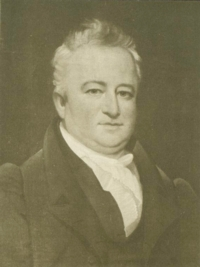

Gerrit Yates Lansing
 Gerrit Yates Lansing was born in August 1783. He was the eldest surviving son of Albany mainliners Abraham G. and Susanna Yates Lansing. He grew up in a very large family in the second and third ward homes of a prominent office holder and civil servant. His large and nearby extended family included grandfather Abraham Yates, Jr. and uncle John Lansing Jr.
He was enrolled at Union College, pursued classical studies, and graduated from Union in 1800. Admitted to the bar in 1804, he opened a law practice in Albany. Previously, he is said to have been the personal secretary to future governor Morgan Lewis.
He served as a legislative clerk and probate court judge. In 1829, he was selected to the New York State Board of Regents, served as chancellor in 1842, and remained on the board until he died.
In 1831, he was elected to represent an Albany district in the United States Congress. Re-elected twice, he served until 1837 and then declined to run again. He later served as an officer of a number of Albany-based corporate enterprises.
In March 1808, he married Albany native Lena Ten Eyck at the Albany Dutch church. The marriage produced at least four children. Helena died in 1838.
Over more than five decades, Gerrit Y. Lansing was among the city's more prominent personages. In 1813, he was listed as a counsellor in the first city directory with a residence at 18 Columbia Street and his office at 92 Market Street. He later lived on North Pearl Street.
In 1828, he testified that he was living in Watervliet and claimed $200 in "damages" from the proposed building of a road through his property.
Gerrit Yates Lansing died in January 1862. He had lived almost eighty years. He was buried with his wife. Their monument can be seen today at the Albany Rural Cemetery.
Gerrit Yates Lansing is best known historically for the manuscripts and documents collections that bear his name. He left a number of papers collections in several repositories that are central to core initiatives of the Colonial Albany Social History Project. The most extensive archive under his name is held at the New York State Library. A published (but not consistently available electronically) Guide describes the seventeen boxes of collection items relating to the American Revolution. This collection includes the personal and business papers of Lansing and his wife.
Substantial "Gerrit Yates Lansing papers" collections are held in repositories in addition to the New York State Library where an outstanding selection of community-focused documents reside. These collections are at the Albany Institute of History and Art; Library of Congress; and elsewhere.
Portrait: Oil painting attributed (#180) to Ezra Ames perhaps in 1830 and copied from an online engraving at the Digital Image Gallery of the New York Public Library. We do not know its present location.